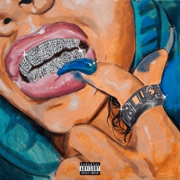

Visión Túnel (2020)

Visión Túnel se trata del tercer trabajo musical de Cruz Cafuné en solitario, siendo este publicado el 4 de diciembre de 2020, meses después del lanzamiento de su antecesor, "Moonlight922" a comienzos del mismo año en enero. El EP vio la luz, tras la salida de dos de las ocho canciones que finalmente serían publicadas, siendo estas en orden de lanzamineto, “GHOSTÉAME” y “VISIÓN TÚNEL” en los que Carlos presentaría los géneros musicales más predominantes en el proyecto, el rap/trap y el pop. Aunque a pesar de esto, encontramos pistas con influencias de géneros distintos como puede ser el R&B en “TLC” junto a Maikel Delacalle.
A lo largo del trabajo, Cruz Cafuné hace algo totalmente distinto a los que nos ha tenido acostumbrados con Moonlight922 y Maracucho Bueno Muere Chiquito, abandonando esa narrativa musical, pero manteniendo esa esencia sentimental que le caracteriza. Una vez más hablando sobre sus relaciones y de cómo las vive, abriendose ante sus oyentes y acercándoles a él, no obstante, mostrando una actitud egocéntrica que destaca sobre todo lo demás.
Tracklist:
- VISIÓN TÚNEL
- GHOSTÉAME
- CARTIER DE MADERA
- STONE ISLAND
- TLC (Ft. Maikel Delacalle)
- MAPA DE CALOR
- BEAST MODE (Ft. WE$T DUBAI)
- ISSEY MIYAKE
Escuchar en spotify:
| blu€s (2024)
